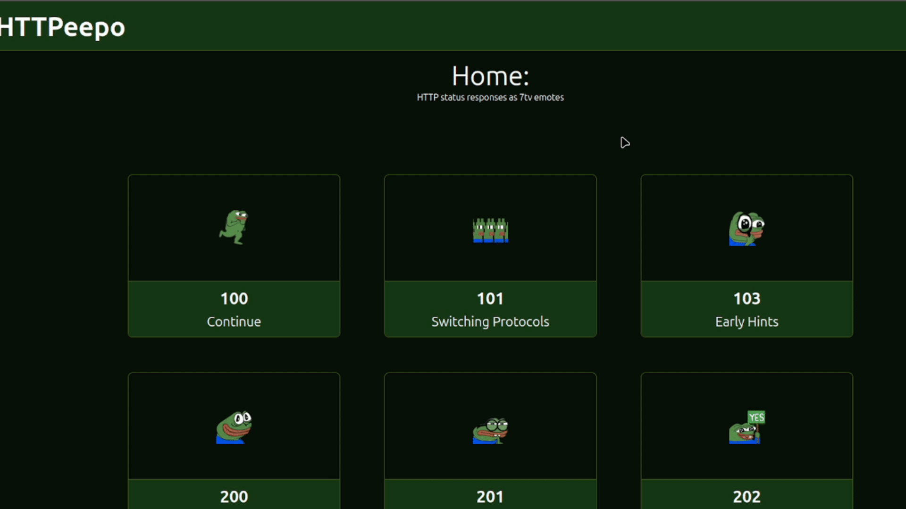
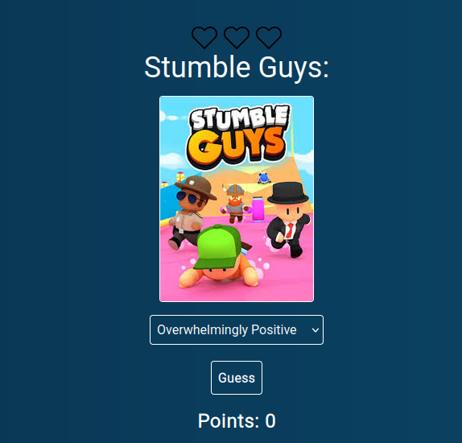
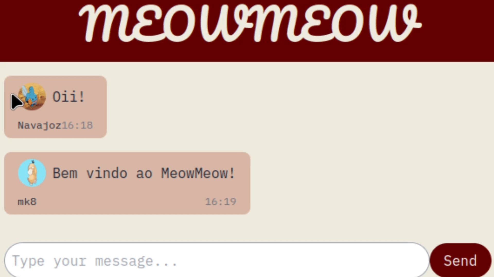

Inspirado pelo site HTTP Cats, HTTPeepo foi feito para explicar e exemplificar respostas do protocolo html, usando emotes da Twitch/7tv

Inspirado pelo site HTTP Cats, HTTPeepo foi feito para explicar e exemplificar respostas do protocolo html, usando emotes da Twitch/7tv

Jogo de browser onde o jogador adivinha a avaliação de jogos, possui banco de dados com 100 jogos e rank global, inspirado por jogos como Gamedle, Termo e Musicle

Prototipo de aplicativo de mensagens, possui sistema auth basico e chat global, além da possibilidade de criar chats privados com os usuarios
Cronômetro de browser, funcionalidade de marcar tempo de voltas, reset e relógio
Olá! Meu nome é Gustavo Navarro, tenho 18 anos e sou um desenvolvedor web. Atualmente, domino tecnologias como React, JavaScript, SQL e Tailwind CSS, e estou em busca da minha primeira oportunidade profissional como desenvolvedor web.
Disponivel para Freelance, colaborações e trabalho